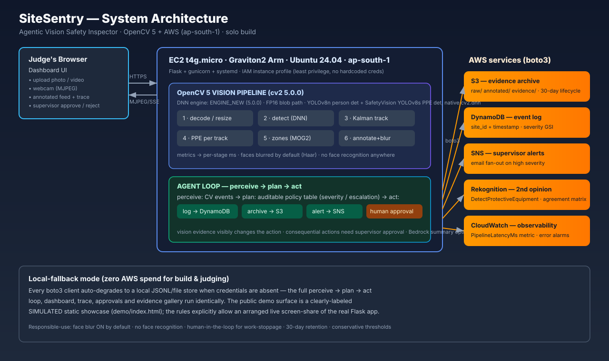

01 · Try the inspection loop (simulated)
Pick a site photo. The scripted walkthrough shows what the real pipeline produces: person boxes, helmet/vest badges, per-frame latency, and the agent trace that turns vision evidence into a decision. In the live system this runs on real OpenCV 5 inference.
AGENT TRACE · perceive → plan → act
02 · Why it matters
PPE non-compliance is the leading preventable factor in construction-site incidents. A clipboard walkthrough covers a site for minutes a day; SiteSentry watches every frame.
PPE classes detected
Hardhat, NO-Hardhat, Safety Vest, NO-Safety Vest, Fall-Detected, Person and more — one YOLOv8s forward pass, natively in OpenCV 5's DNN engine.
Hardhat mAP@0.5
Published held-out test metric of the SafetyVision YOLOv8s model (overall 0.766). We report the model's own numbers — including its weak spots.
Escalation tiers
Log → archive → alert → human-approved stoppage. Repeat offenders escalate automatically; consequential actions never fire without a supervisor.
03 · The agentic loop
This is what qualifies as agentic vision: the image result visibly changes what the system does next. A chatbot explaining a fixed result would not count — ours replans.
👁 PERCEIVE
OpenCV 5 pipeline: detect → Kalman-track → PPE per track → zones → annotate + face blur
🧠 PLAN
Auditable policy table: (event × offense count) → action, severity, approval requirement
⚡ ACT
DynamoDB log · S3 evidence · SNS alert · Rekognition 2nd opinion · approval request
🧑 HUMAN
Supervisor approves/rejects stoppages in one click; decision written back to the log
Example policy rows
| Event | Offense | Action | Severity | Approval |
|---|---|---|---|---|
| NO_HELMET | 1st | Log + archive evidence | medium | — |
| NO_HELMET | 2nd | SNS alert to supervisor | high | — |
| NO_HELMET | 3rd+ | Recommend work stoppage | critical | required |
| FALL_SUSPECTED | any | Immediate SNS + stoppage recommendation | critical | required |
| ZONE_INTRUSION | any | SNS alert + archive | high | — |
04 · Architecture
Flask on EC2 t4g.micro (Graviton2, ap-south-1). Every boto3 client auto-degrades to a labeled local store when credentials are absent — the full loop runs with zero spend.

05 · OpenCV 5, substantively
New DNN engine
Both models run natively in cv2.dnn — no ONNX Runtime. Runtime detection handles ENGINE_NEW (5.0.0) vs ENGINE_OPENCV (later 5.x); FP16 blob path with FP32 fallback.
Tracking + geometry
Kalman-filter multi-object tracking, BackgroundSubtractorMOG2 zone motion, pointPolygonTest intrusion, 30-frame fall heuristic.
HarfBuzz annotation
Boxes, badges and per-frame ms render through OpenCV 5's HarfBuzz text stack; Haar-cascade face blur is on by default.
06 · Failure cases, honestly
Required evidence, not fine print. The system is designed around these limits: conservative thresholds plus mandatory human approval where it matters.
- NO-Safety Vest recall is 0.431 (model card) — the weakest class; we flag "missing unless proven present" and keep a human in the loop.
- Occlusion & glare fragment tracks and drop confidence; the tracker bridges ≤8 missed frames, then the ID resets.
- Distant figures (<50 px) are frequently missed entirely.
- Fall heuristic false alarms on bending/crouching — which is why a suspected fall always needs supervisor approval.
- CPU-bound: ~0.5–0.8 s/frame on Lambda-class CPUs — inspection cadence, not 30 fps video. Measured, not claimed.
07 · Responsible use
🔒 Face blur by default
All annotated output blurs faces. No face recognition or identity tracking exists anywhere in the code — tracks are anonymous numbers.
🧑 Human in the loop
Consequential actions (work stoppage, fall escalation) require explicit supervisor approval, written back to the log.
🗑 30-day retention
S3 lifecycle expires evidence after 30 days. The system is an assistive pre-screening aid — never automated discipline.
08 · Links
📦 Code
github.com → sitesentry — pinned requirements, one-command AWS deploy, offline test suite. (Link added at submission time.)
📄 Technical report
TECHNICAL_REPORT.md in the repo — problem, users, architecture, OpenCV 5 detail, AWS deployment, evaluation, limitations, responsible use.
🎬 Live demo
Arranged live screen-share of the real Flask app for judges (explicitly allowed by the rules). This page is the pitch surface; the screen-share is the proof.